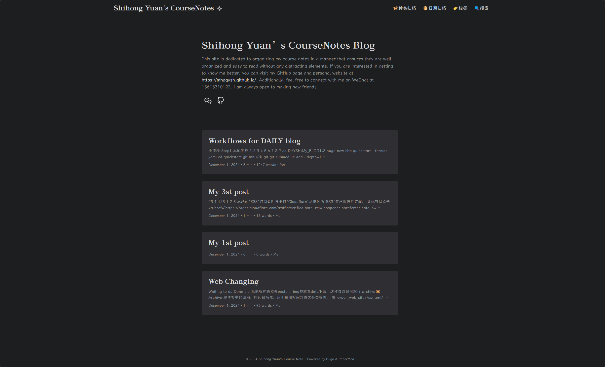

归档说明
保留项目位置，而不编造缺失细节
原始首页明确把 Python 爬虫方向放在了计算机项目里。这说明这个项目位置本身属于作品集历史的一部分，即使详细长文已经遗失。
与其凭空补写图片、功能和里程碑，不如把这条页面路由保留下来，作为一个诚实的归档说明页。
计算机项目 / 归档条目
这个页面保留了原始作品集中 “crawling data” 这一项目位置，尽管完整独立的详情页并没有在当前源码里保留下来。
归档说明
原始首页明确把 Python 爬虫方向放在了计算机项目里。这说明这个项目位置本身属于作品集历史的一部分，即使详细长文已经遗失。
与其凭空补写图片、功能和里程碑，不如把这条页面路由保留下来，作为一个诚实的归档说明页。
归档背景

一个用于让归档条目保持可见性的占位视觉。